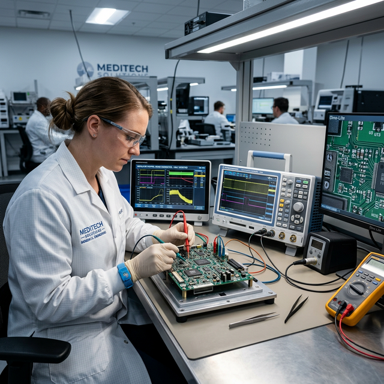
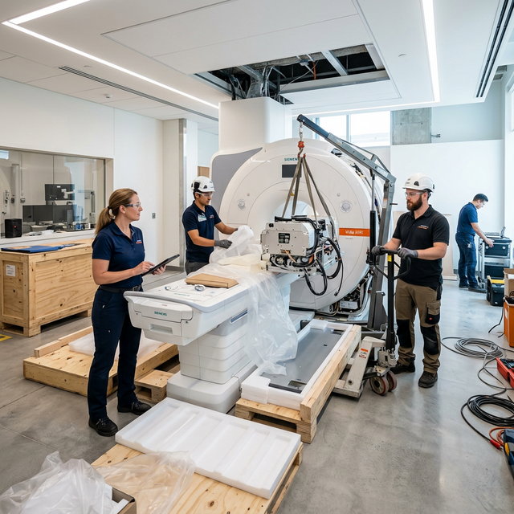

Soluciones técnicas especializadas para garantizar la continuidad operativa, modernización y rendimiento de equipos médicos.
Programas técnicos planificados para prolongar la vida útil de los equipos médicos y reducir fallas inesperadas.

Intervenciones especializadas para restablecer la operatividad de equipos médicos con diagnóstico técnico preciso.
Análisis técnico avanzado para anticipar fallas y optimizar el rendimiento operativo de los equipos.
Soporte integral para equipamiento biomédico y de laboratorio con enfoque en continuidad, precisión y seguridad.

Instalación, configuración, validación inicial y acompañamiento técnico para la correcta entrada en operación.
Acompañamiento técnico para toma de decisiones sobre mantenimiento, modernización y mejora de equipamiento médico.